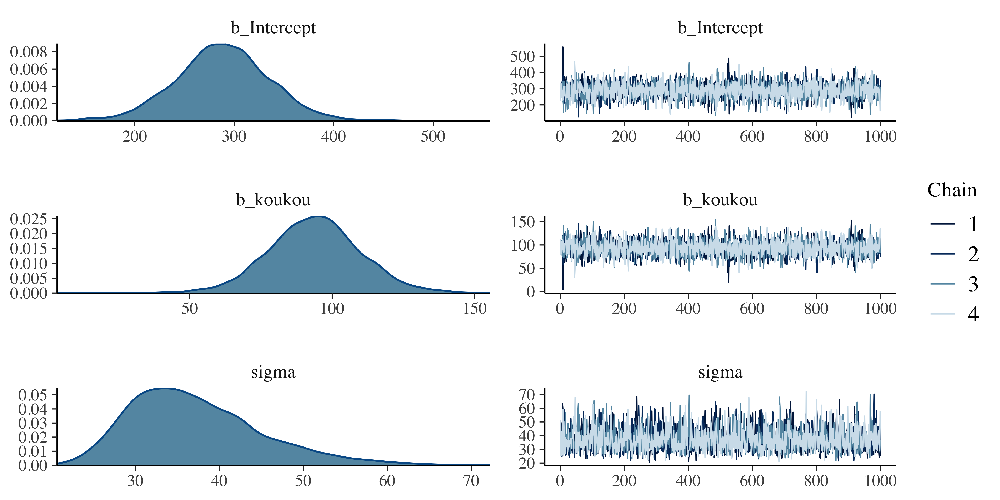
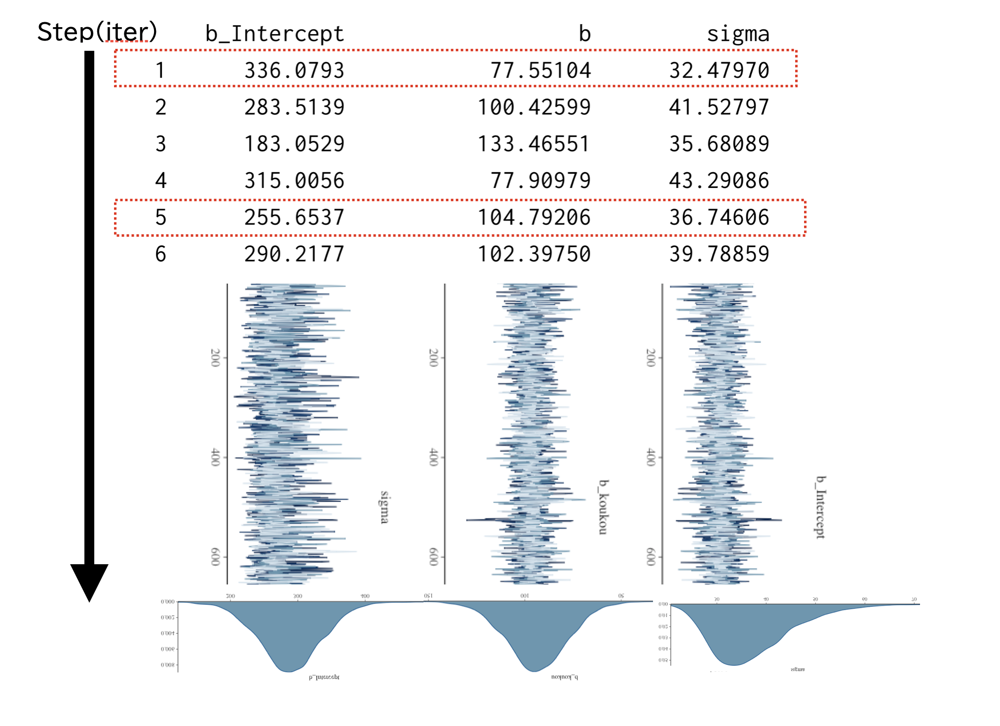
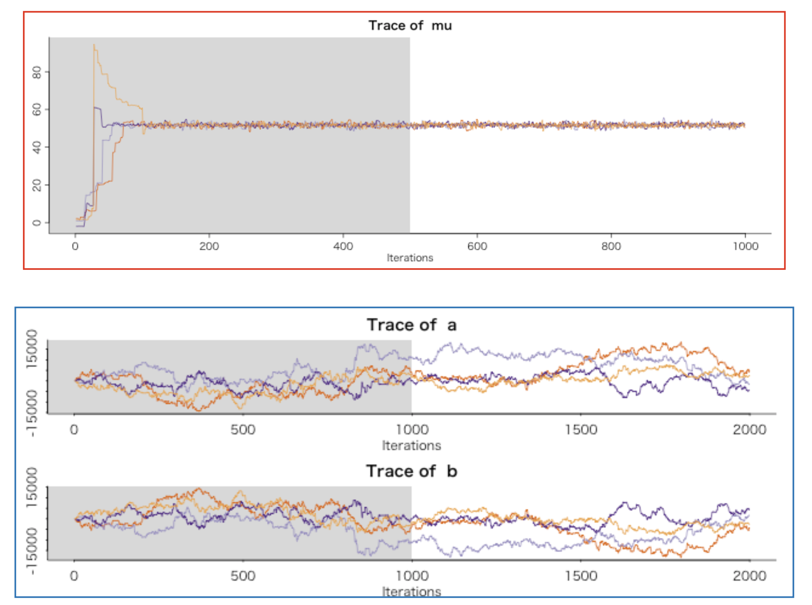
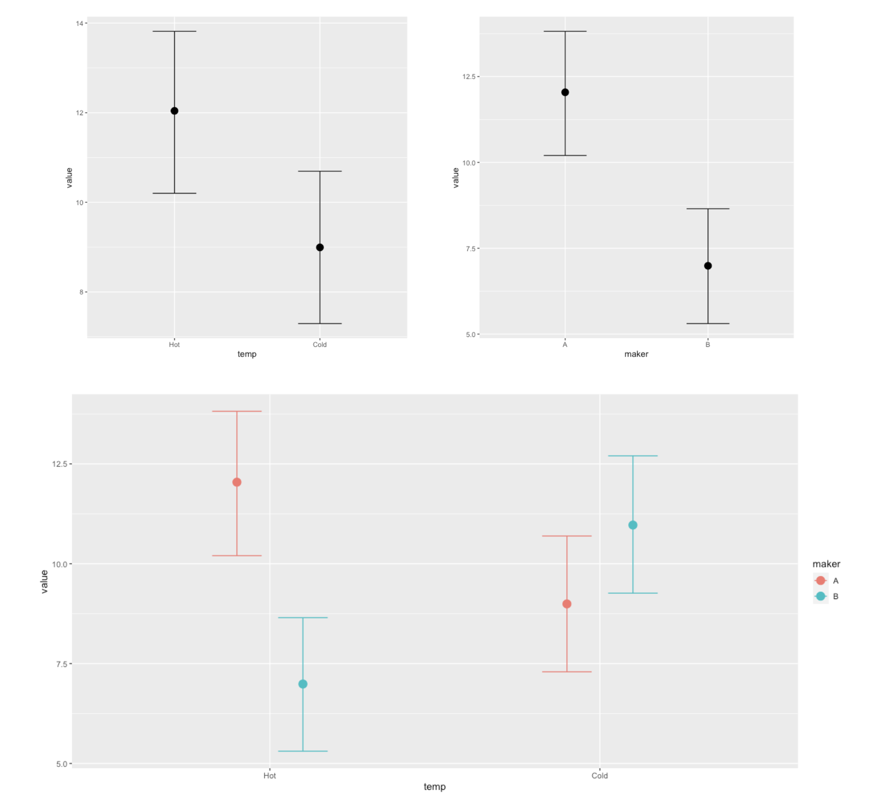

Chapter 22 線形モデルはlm関数。従属変数~説明変数の形で書く
fit <- lm(daigaku ~ koukou, data = seiseki) # 結果をわかりやすく表示 summary(fit)
##### コード解説
2-3行目
: 高校と大学の時のデータを入力している
5行目
: それぞれのデータをデータフレーム型に組み上げている
8-10行目
: ggplotをつかって描画しています
13行目
: 回帰分析を実行しています
15行目
: 結果を出力しています
これの結果は次のようなものでした(`console[RS:out27_01]`)。
::: Rscreen
lmの出力out27_01
> summary(fit)
Call:
lm(formula = daigaku ~ koukou, data = seiseki)
Residuals:
Min 1Q Median 3Q Max
-31.425 -21.896 -6.906 -1.207 80.110
Coefficients:
Estimate Std. Error t value Pr(>|t|)
(Intercept) 288.74 43.00 6.715 1.44e-05 ***
koukou 93.72 14.85 6.313 2.69e-05 ***
---
Signif. codes: 0 ‘***’ 0.001 ‘**’ 0.01 ‘*’ 0.05 ‘.’ 0.1 ‘ ’ 1
Residual standard error: 34.36 on 13 degrees of freedom
Multiple R-squared: 0.754, Adjusted R-squared: 0.7351
F-statistic: 39.85 on 1 and 13 DF, p-value: 2.688e-05
:::
回帰係数は切片が288.74，傾きが93.72と推定され，それらが0ではないと帰無仮説に対する検定結果が示されています。またモデル全体の適合について，$F(1,13)=39.85,p=0.000002688$という結果や，$R^2=0.754$などが示されています[^6]
早速これをベイズ推定していきましょう。何がどう変わるのでしょうか。
まずはパッケージ`brms`を読み込み，回帰分析の関数を`lm`から`brm`に変えるだけでオッケーです(`code:[code::27_04]`)。
``` {#code::27_04 .c++ language="c++" label="code::27_04" caption="ベイズ推定してみる"}
library(brms)
fit.brm <- brm(daigaku ~ koukou, data = seiseki)
print(fit.brm)画面に様々なメッセージが出力されたかと思いますがそれは後で説明するとして，とりあえず最後の3行目を実行して示された回帰分析の結果を確認してみましょう。
一行目にFamily: gaussianとあります。これは正規分布(gaussian
curve)を使ったモデルであることが示されています。2，3行目にモデルの説明，4行目にデータの説明があった後，6行目にはSamples:とあります。これはデータ，標本のことを指しているのではなく，MCMC法によって得られた乱数のサンプルのことを意味しています。MCMCの表記等については後でまとめて説明します。
また，MCMCによる結果は毎回乱数を発生させて計算させています。ここに示した結果は私の環境での結果であって，皆さんがやってみると少し違った数字が出てくるかもしれません。というのも，パソコンがかわると生成される擬似乱数も変わってしまうからです。MCMC法はあくまでも近似計算ですから，厳密に一致するかどうかを考えるのではなく，だいたいあっているかどうかで判断してください183。
係数などはPopulation-Level Effectsというところに書かれているもので，切片(Intercept)の推定値(Estimate)が288.37，説明変数である高校の成績にかかる傾きが93.86であることが示されています。続いて標準誤差，95%確信区間の下限(lower)(l-95%CI)，上限(upper)(u-95% CI)が示されています。検定ではなく，95%区間を見てそれが0を跨いでいるかどうかで，検定と同じような判断ができるということですね。
最後にもう1つの推定値，\(\sigma\)がFamily Specific Parametersのところに現れています184。
console[RS:out27_02]が基本的な結果の情報です。lm関数を使った最尤推定の結果とほとんど同じ数字になっていることがわかります。結果はそれほど変わらないのですが，推定値が分布として得られていることが大きく異なる点です。
brmsの出力out27_02
Family: gaussian
Links: mu = identity; sigma = identity
Formula: daigaku ~ koukou
Data: seiseki (Number of observations: 15)
Samples: 4 chains, each with iter = 2000; warmup = 1000; thin = 1;
total post-warmup samples = 4000
Population-Level Effects:
Estimate Est.Error l-95% CI u-95% CI Rhat Bulk_ESS Tail_ESS
Intercept 288.37 46.68 196.11 378.93 1.00 3212 2568
koukou 93.86 16.14 62.44 126.07 1.00 3167 2482
Family Specific Parameters:
Estimate Est.Error l-95% CI u-95% CI Rhat Bulk_ESS Tail_ESS
sigma 37.23 7.86 25.26 55.84 1.00 2746 2839
Samples were drawn using sampling(NUTS). For each parameter, Bulk_ESS
and Tail_ESS are effective sample size measures, and Rhat is the potential
scale reduction factor on split chains (at convergence, Rhat = 1).
このことをわかりやすく表示するために，plot(fit.brm)としてみましょう。図1.1のように，分析結果がプロットされます。

ベイズ法による回帰係数の推定
この図の左側にあるのが，事後分布の形です。推定値である288.37や93.86は分布の平均値(EAP推定値)で，この分布のピーク(MAP推定値)ではないことに注意してください。MAP推定値が欲しい場合は，別途bayestestRパッケージ(Makowski, Ben-Shachar, and Lüdecke 2019)を導入し，map_estimate関数を実行する必要があります(code:[code::27_05])。
{#code::27_05 .c++ language="c++" label="code::27_05"
caption="結果の表示"} install.packages(bayestestR)
library(bayestestR) map_estimate(fit.brm)
22.0.0.0.1 コード解説
- 1行目
-
bayestestRパッケージがない人は，この1行でインストールできます - 2行目
パッケージを読み込み
- 3行目
-
map_estimate関数に分析結果を投入
最小二乗法や最尤法と違って，結果が分布で表されるという感覚が掴めてきたでしょうか。続いてはこの分布が乱数によって生成されていることに注目してみたいと思います。
22.0.1 MCMC法の評価
既に述べたように，MCMCは乱数発生法であり，事後分布からのサンプリングでもって結果のヒストグラムを描くのでした。ヒストグラムが確率分布の稜線を描いてくれるからです。ただし，乱数ですから毎回違う結果が出ます。乱数がちゃんと事後分布からのものであるかどうかも，チェックしなければなりません。それらの情報について書いてあるのが，結果の6行目のあたりにあるのです(console[RS:out27_03])
MCMCの評価out27_03
Samples: 4 chains, each with iter = 2000; warmup = 1000; thin = 1;
total post-warmup samples = 4000。これを読み解いていきましょう。
MCMC法はステップ・バイ・ステップで，一歩ずつ次の乱数を生み出していってます。このMCMCサンプルは，推定したいパラメータの代表候補たちです。内部に保存されているデータを抜き出したのが図1.2です。今回は切片(b_intercept)と傾き(b)と誤差の散らばり度(sigma)について，毎回のステップで得られた乱数の値が書かれています。たとえば傾きは\(77.55104 \to 100.42599 \to 133.46551 \to 77.90979 \to
\cdots\)というように，前回の値を軸にしながら次々と乱数を生み出していってるのです。正確には，ここには3つの変数があり，赤枠で囲んでいるようにこの3つの変数からなる同時確率空間からサンプリングしてきます。つまり\((336.0793,77.55104,32.49790)\to
(283.5139,100.42599,41.52797) \to \cdots\)というように，3つずつセットでステップを踏んでいることになります。これがどんどん積み重なっていく，ステップの様子を示したのが図の中頃にあるギザギザの折れ線であり，これをまとめ上げて積み重ねたヒストグラムが最後に事後分布として得られる，というのが基本原理です。

MCMCのやっていること
これを踏まえて，出力されたものを見てみましょう。まず4 chainsとあります。これはMCMCのステップを4つ並行して実行したことを意味しています。MCMCはステップ・バイ・ステップで，一歩ずつ次の乱数を生み出していってるわけですが，どこからスタートするかによって全然違う答えにたどり着いてしまう可能性がゼロではありません。ステップの途中でも，もしかすると変なところにフラフラ外れていってしまっているかもしれません。こうした懸念をチェックするべく，1つのマルコフチェインではなくて複数のチェインを同時に実行して，「どのチェインも同じところに行き着くよ」ということを持って，正しくサンプリングがなされたと判断するのです。
次にiterとあります。これは総ステップ数で，今回は各チェイン2000ステップしたことを意味します。次にwarmupは，ウォームアップ期間とかバーンイン期間と呼ばれるものです。チェインの最初の方のステップは，初期値に依存したステップになっており，事後分布の代表値としては適切でないかもしれません。事後分布をうまく代表するように，最初の期間は採用しないという方法が取られており，それが最初の1000ステップであること記録されています。各チェインについて2000ステップ，うち1000ステップを捨てるので1000ステップだけ採用されますが，それが4チェインあるので，合計で4000サンプル。4000点のヒストグラムで事後分布を描画したことになります。total post-warmup samples = 4000というのはそういう意味ですね。最後にthin=1とありますが，これは間引きといわれ，サンプルとして採用するステップの間隔を意味します。今回は1ですので毎回のサンプルを(1stepずつ)採用していきますが，これが2とか3になると，2ステップ，3ステップごとにしか結果として保存しないということになります。
図1.3をみてください。この図はトレースプロットといい，先ほどの図1.2の中頃にあったもの，あるいはplotで出力させた図1.1の右側にあったものです。ステップ数を横軸にとりながら鎖のステップを線で結んで，鎖がどのあたりをウロウロしているかを可視化しています。図の上には，複数のスタート地点から始まっても，途中で鎖が絡まりあって同じような領域をウロウロしている(サンプリングしている)ことが示されています。一方，下の方の図では鎖がほぐれています。下のような例は，サンプリングがうまくいっていないことの証左で，モデルが悪かったか，パラメータを特定する条件が不十分であったか，といった何らかの問題があったことを示しています。

推定がうまくいってない時の例
このように，結果が出力された後でMCMCの挙動をチェックすることが必要です。出力画面には最後にチェインの絡み具合をし評価した\(\hat{R}\)(Rhat)が1であれば収束している，ということを書いていて185，今回の結果のRhatの列にはいずれも1.00とありますから，MCMCは問題なく事後分布からの代表値を取り出している，と診断できます(console[RS:out27_04])。
MCMCに関するメッセージout27_04
and Rhat is the potential scale reduction factor on split chains (at convergence, Rhat = 1).22.1 要因計画の推定
続いて要因計画の例にいきましょう。既に線形モデルで推定する方法については説明してありますから，これの関数をlmからbrmに変えるだけでオッケーです。二要因の例を使って説明してみましょう(code:[code::27_06])。
``` {#code::27_06 .c++ language=“c++” label=“code::27_06” caption=“データを作ってbrmでベイズ推定”} Example2 <- data.frame( id = 1:12, num = rep(1:3, 4), temp = rep(1:2, each = 6), maker = rep(rep(1:2, each = 3), 2), value = c(13, 11, 12, 7, 6, 8, 9, 9, 9, 13, 11, 9) ) Example2\(temp <- factor(Example2\)temp, labels = c(“Hot”, “Cold”) ) Example2\(maker <- factor(Example2\)maker, label = c(“A”, “B”) )
result.brm2 <- brm(value ~ temp * maker, data = Example2) result.brm2
##### コード解説
1-7行目
: データフレーム形にデータを組み上げています
8-13行目
: 説明変数の中で名義尺度水準のものを要因型であると設定しています。
15行目
: 線形モデルを実行しています。`brm`としてあることに注意して下さい。
16行目
: 結果を出力させています。
これを実行した結果が次のようになります(`console[RS:out27_05]`)。
::: Rscreen
交互作用モデルのbrms結果out27_05
Family: gaussian
Links: mu = identity; sigma = identity
Formula: value ~ temp * maker
Data: Example2 (Number of observations: 12)
Samples: 4 chains, each with iter = 2000; warmup = 1000; thin = 1;
total post-warmup samples = 4000
Population-Level Effects:
Estimate Est.Error l-95% CI u-95% CI Rhat Bulk_ESS Tail_ESS
Intercept 12.01 0.84 10.34 13.65 1.00 1742 2016
tempCold -3.04 1.21 -5.55 -0.68 1.00 1554 1583
makerB -5.02 1.19 -7.40 -2.63 1.00 1622 1915
tempCold:makerB 7.05 1.65 3.69 10.42 1.01 1475 1563
Family Specific Parameters:
Estimate Est.Error l-95% CI u-95% CI Rhat Bulk_ESS Tail_ESS
sigma 1.42 0.42 0.85 2.49 1.00 1290 1796
Samples were drawn using sampling(NUTS). For each parameter, Bulk_ESS
and Tail_ESS are effective sample size measures, and Rhat is the potential
scale reduction factor on split chains (at convergence, Rhat = 1).
:::
データの生成に正規分布を仮定していること(`Family: gaussian`)，モデル式やMCMCサンプルの特徴を描いた後に，推定値が出ています。推定値の見方は`lm`の時と同じですが，95%区間が示されていること，MCMCの収束を判定する`Rhat`などがあるところが違うところですね。この95%区間が狭いと自信を持って結果を言える，広いと確信度が低くまだまだデータが足りない，というところでしょうか。また今回は主効果にあたるところの95%区間が0を跨いでいるので，傾きが0であるという帰無仮説を考えるのであれば，これは棄却できないということになります。交互作用は少なくとも3.69，大きければ10.42ポイントも動かすのですから，これは大きな効果があると言っていいでしょう。
このように直接的に大きさを評価することもできますが，次のようなプロットを描くととくにわかりやすいでしょう(`code:[code::27_07]`)。
``` {#code::27_07 .c++ language="c++" label="code::27_07" caption="周辺化して効果を見る"}
conditional_effects(result.brm2,effects = "temp")
conditional_effects(result.brm2,effects = "maker")
conditional_effects(result.brm2,effects = "temp:maker")表示される3つの図(1.4)はそれぞれ，温度の主効果，銘柄の主効果，そして交互作用であり，そのEAP推定値(点)と95%確信区間がついています。これを見ると，温度の主効果は確信区間に重複があり，銘柄にそれはないこと，交互作用も暖かい時の銘柄の違いが大きく，冷たい時の銘柄の効果は薄いとか，銘柄Bは温度ではっきりと違いがあるというようなことが目に見えてわかります。これらは帰無仮説検定ではありませんから，検定の多重性の問題がないため，新しい統計量を使って計算し直す必要もありません。非常に直感的に推論を進めていくことができるでしょう。

周辺平均値の推定結果
22.2 群内モデルの推定
最後に，群内のモデルについて解説します。第\[chapter22\]講の，介入効果のモデルを思い出してください。群内要因がある線形モデルは，次のように表記できるのでした。
\[X_{ij} = \mu_i + \beta_0 + \beta_{ij} +
\epsilon_{ijk}\]
群間要因のモデルと違って，\(\mu_i\)すなわち個人\(i\)ごとの平均値が想定されていることがポイントです。これを確率モデルとして書くと，
\[X_{ij} \sim Normal( \mu_i + \beta_0 + \beta_{ij}
,\sigma)\]
となります。平均にあたるところが線形モデルで表現され，誤差\(\epsilon\)が散らばることが正規分布の標準偏差\(\sigma\)で表現されていることを確認してください。それ以外に違いはありません。
ところで，個人差\(i\)は介入前のスタート地点の状態を表しており，様々な値を取ると考えられますが，この個性の部分についても正規分布を仮定できます。つまり，
\[\mu_i \sim Normal(\mu_G, \tau)\]
のように，です(個人差の散らばりを表す標準偏差として，新たな記号\(\tau\)(タウ)を用意しました)。線形モデルで表現するには，このように正規分布の中に正規分布が入っている，という階層的な構造を考えることと同じなのです。これをbrmsで推定するには，次のようにコードを書きます(code:[code::27_08])。
``` {#code::27_08 .c++ language=“c++” label=“code::27_08” caption=“データを作ってbrmでベイズ推定”} Example3 <- data.frame( ID = rep(1:4,3), time = rep(1:3,each=4), value = c(10, 9, 4, 7,5, 4, 2, 3,9, 5, 3, 5) ) Example3\(time <- factor(Example3\)time,labels = c(“time1”,“time2”,“time3”))
result.brm3 <- brm(value ~ time + (1 | ID), data = Example3) result.brm3 conditional_effects(result.brm3)
##### コード解説
1-5行目
: データフレーム形にデータを組み上げています。前回と同じデータなのですが，組み方が少し変わっている点に注意してください。確認のために，`Example3`がどのような形になっているか一度表示してみるといいでしょう。
6行目
: 説明変数の中で名義尺度水準のものを要因型であると設定しています。
8行目
: 線形モデルを実行しています。`brm`としてあること，`(1|ID)`という項が増えていることに注意してください。
9-10行目
: 結果を出力させています。
線形モデルの書き方が変わったことに注意してください。従属変数と独立変数をチルダで繋ぐのはこれまでと同じなのですが，これに加えて`(1|ID)`という表記があります。このカッコの中身は1が切片を表しており，それが変数`ID`ごとに変わるよ，ということを意味しています。
これを実行した結果が次のようになります(`console[RS:out27_06]`)。
::: Rscreen
ランダム切片モデルout27_06
Family: gaussian
Links: mu = identity; sigma = identity
Formula: value ~ time + (1 | ID)
Data: Example3 (Number of observations: 12)
Samples: 4 chains, each with iter = 2000; warmup = 1000; thin = 1;
total post-warmup samples = 4000
Group-Level Effects:
~ID (Number of levels: 4)
Estimate Est.Error l-95% CI u-95% CI Rhat Bulk_ESS Tail_ESS
sd(Intercept) 2.33 1.15 0.69 5.20 1.00 970 1001
Population-Level Effects:
Estimate Est.Error l-95% CI u-95% CI Rhat Bulk_ESS Tail_ESS
Intercept 7.36 1.30 4.79 9.83 1.00 1201 1112
timetime2 -3.99 1.00 -5.99 -1.86 1.00 2267 2017
timetime3 -2.00 0.98 -3.95 -0.02 1.00 2439 1736
Family Specific Parameters:
Estimate Est.Error l-95% CI u-95% CI Rhat Bulk_ESS Tail_ESS
sigma 1.31 0.51 0.70 2.58 1.01 957 1723
Samples were drawn using sampling(NUTS). For each parameter, Bulk_ESS
and Tail_ESS are effective sample size measures, and Rhat is the potential
scale reduction factor on split chains (at convergence, Rhat = 1).
:::
結果のところに大きく分けて，`Group-Level Effects`と`Population-Level Effects`の2つがあることみてください。群間要因の場合は`Population-Level Effects`の要素しかありませんでした。これはと呼ばれ，どの個人にも共通の効果があることを表しています。これに対して`Group-Level Effects`はと呼ばれ，人ごと，ケースごとに確率的に変わりうるところを意味しています。今回は最初の個人差(スタート地点，切片)が人ごとに変わるので`sd(Intercept)`とあります。スタート地点が人によって2点ぐらいは左右するよ，ということがここでみて取れるのです。
固定効果の見方は，群間要因の時と同じです。第一期(Time1)に比べて，第二期は平均点が$-3.99$，第三期は$-2.00$となっています。この区間幅をみると，第一期よりも下がっているというところですが，第一期と第三期の下り幅はギリギリ0でない，というぐらいであってもう少し慎重にデータを追加して検証した方が良いかもしれませんね。\
## 課題
第[\[chapter23\]](#chapter23){reference-type="ref"
reference="chapter23"}講でやった3つの課題それぞれを，`brms`パッケージを使って実行してください。念の為，以下に簡単な問題設定を再掲いたします。
##### 課題1 線形モデルとしての分析
ある学校の国語の授業で，ある教師が4つのクラスそれぞれに対して個別のテキストを使って授業を行い，同一のテストを行うことでテキストの効果があるかどうかを検証したとします。
各クラスには10人の生徒がいて，それぞれのテスト結果は表[\[L23::exe1\]](#L23::exe1){reference-type="ref"
reference="L23::exe1"}の通りです。このデータについて，回帰分析のベイズ推定を行った上で，次の各問いに答えてください。
1. 切片の推定値はいくらになりましたか。おおよそで結構ですので，EAP推定値を答えてください。
2. 回帰分析を行った結果，テキストAにくらべてテキストBの平均値はどれぐらい違うと思われますか。おおよそで結構ですので，95%区間を答えてください。
3. 回帰分析を行った結果，テキストAにくらべてテキストCの平均値はどれぐらい違うと思われますか。おおよそで結構ですので，95%区間を答えてください。
4. 回帰分析を行った結果，テキストAにくらべてテキストDの平均値に違いがあると断言しても良いでしょうか。`conditional_effects`の図をみて判断してください。
##### 課題2 Betweenデザインの分散分析
別の学校では，テキストをA,B,Cの3種類とし，教員が二人がそれぞれのテキストを使って教えることにしました。1クラス12人，一学年6クラスを使っての実験です。
授業後のテストの点数が表[\[L23::exe2\]](#L23::exe2){reference-type="ref"
reference="L23::exe2"}の通りです。このデータに対して回帰分析のベイズ推定を行った上で，その結果について回答してください。
1. 切片の推定値はいくらになりましたか。おおよそで結構ですので，EAP推定値を答えてください。
2. テキストA,B,Cの効果はどのように判断すれば良いでしょうか。`conditional_effects`の図をみて考察してください。
3. 教員A,Bの効果ははどのように判断すれば良いでしょうか。`conditional_effects`の図をみて考察してください。
4. 交互作用として，どのような特徴があるでしょうか。`conditional_effects`の図をみて考察してください。
##### 課題3 Withinデザインの分散分析
さらに別の学校では，テキスト・教員は一種類・一人なのですが，4つの時期において成績が変化するかどうかを追跡調査しました。
各時期のテストの点数は表[\[L23::exe3\]](#L23::exe3){reference-type="ref"
reference="L23::exe3"}の通りです。次の各指示に従い，その結果について回答してください。
なお，このデータセットは`Lesson8exe3.csv`ファイルに入っていますが，分析に際しては次のコードを実行して，整理しなおしたデータセットを使ってください(`code:[code::27_09]`)。
``` {#code::27_09 .c++ language="c++" label="code::27_09" caption="データを外部ファイルから読み込んで実行する"}
library(tidyverse)
dat3 <- read_csv("Lesson8exe3.csv") %>%
pivot_longer(-id,names_to="period") %>%
print22.2.0.0.1 コード解説
- 1行目
-
データファイル
Lesson8exe3.csvを読み込んでいます - 2行目
id列をキーにデータを縦型にしています
- 3行目
データを表示させています
-
個人差について正しく述べている文章を選んでください。
-
時期の効果について正しく述べている文章を選んでください。